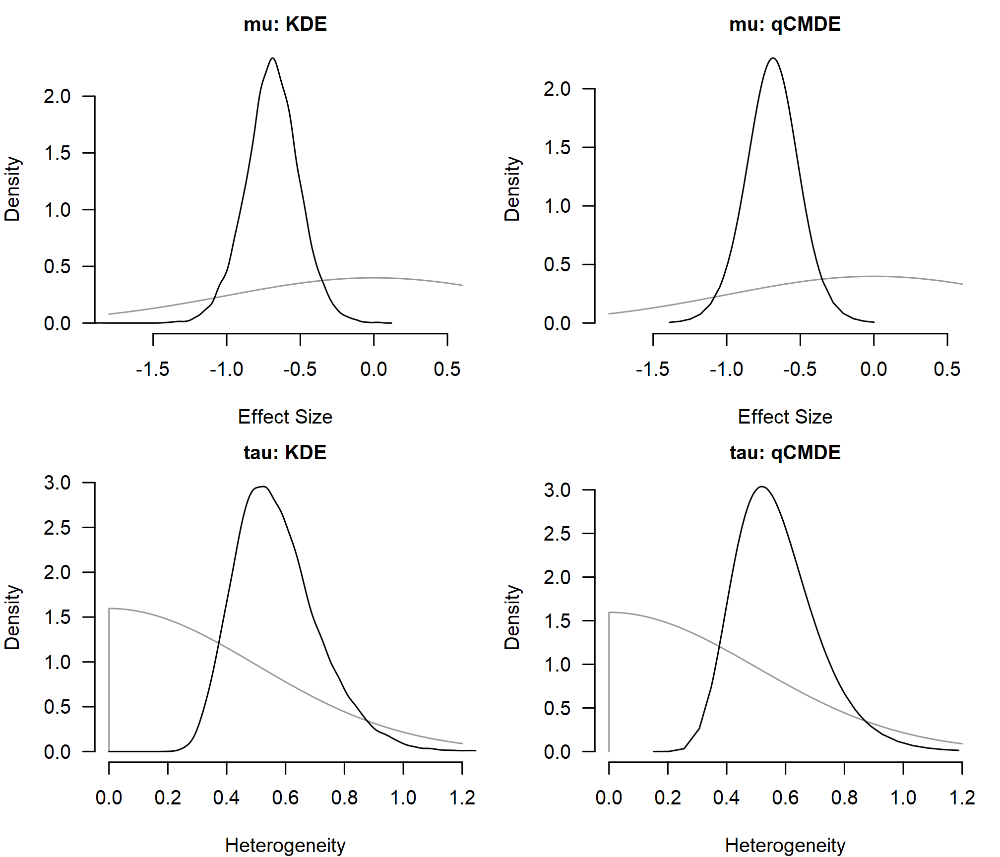
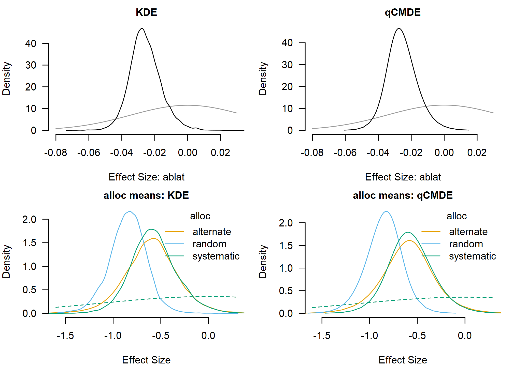

Posterior Densities and Parameter Tests
František Bartoš
25th of October 2026
Source:vignettes/v22-posterior-densities-parameter-tests.Rmd
v22-posterior-densities-parameter-tests.RmdBayesian meta-analysis produces posterior distributions for the average effect, the between-study heterogeneity, and any meta-regression coefficients. Evidence for or against specific values of these parameters can be quantified via Bayes factors.
The posterior distributions are usually summarized via posterior
means and credible intervals, and visualized via (prior and) posterior
density plots, usually obtained via kernel density estimation (KDE). The
KDE visualization can be, however, quite “bumpy” even with a sizable
number of posterior samples. In the first part of this vignette we
illustrate how the posterior density visualization can be improved via
q-grid conditional marginal density estimator (qCMDE) implemented in the
RoBMA R package (Bartoš & Maier, 2020).
In the second part of the vignette, we illustrate how to compute
Bayes factors based on posterior distribution in the RoBMA
R package (which takes advantage of the qCMDE estimator when testing a
point null hypothesis). This posterior samples route allows us to re-use
a single model fit with a Savage–Dickey density ratio (Dickey, 1971; Wagenmakers et al., 2010)
to compute Bayes factor for point-null hypotheses and encompassing-prior
odds (Klugkist et al., 2005) for
inequality and region hypotheses. It adds to the existing bridge
sampling route (Gronau et al., 2017) which
compares marginal likelihoods of separately fitted constrained and
unconstrained models (see “Comparing Models with Bayes Factors” in Bayesian
Meta-Analysis), and the product-space route (Lodewyckx et al.,
2011) which fits multiple models simultaneously in a single
MCMC run and estimates the Bayes factor from the posterior inclusion
probabilities (see Bayesian Model
Averaging).
We use the BCG vaccine dataset from the metafor package
(Viechtbauer,
2010) to walk through the density estimation and Bayes factor
computation. We start with a simple random-effects meta-analysis,
compare KDE and qCMDE on the average effect and heterogeneity, and use
hypothesis() to test three hypotheses on the average effect
with results matched against bridge sampling. We then add a continuous
and a categorical moderator and combine marginal_means()
with hypothesis() for tests on estimated marginal means.
All effect sizes are on the log risk-ratio scale, so the no-effect value
is 0.
Simple Meta-Analysis
The BCG vaccine dataset contains 13 randomized trials on tuberculosis
prevention. escalc() computes log risk ratios
yi and their sampling variances vi.
data("dat.bcg", package = "metadat")
dat <- metafor::escalc(
ai = tpos, bi = tneg, ci = cpos, di = cneg,
measure = "RR", data = dat.bcg
)We first fit a random-effects meta-analysis with a standard normal prior distribution on the mean effect.
prior_effect_normal <- prior(distribution = "normal", parameters = list(mean = 0, sd = 1))
fit_simple <- brma(
yi = yi, vi = vi, measure = "RR",
prior_effect = prior_effect_normal,
data = dat, seed = 1
)
summary(fit_simple)
#>
#> Bayesian Random-Effects Model (k = 13)
#>
#> Estimates
#> Mean SD 0.025 0.5 0.975 error(MCMC) error(MCMC)/SD ESS R-hat
#> mu -0.689 0.182 -1.057 -0.688 -0.330 0.00149 0.008 15000 1.000
#> tau 0.572 0.143 0.342 0.554 0.897 0.00176 0.012 6688 1.000qCMDE Posterior Density Estimation
By default, plot.brma() visualizes marginal posterior
distributions with kernel density estimation (KDE) on the sampled MCMC
draws. KDE summaries are convenient and generic, but they might not look
smooth even with a sizable number of posterior samples, and the density
value at a specific point, for example mu = 0, inherits the
same Monte Carlo noise.
qCMDE is a model-aware alternative that leverages information in the joint posterior distribution. It provides a smoother density curve and a more stable estimate of the marginal posterior density at any user-specified value. The construction extends the Rao–Blackwellized marginal density estimator of Gelfand et al. (1992) and the importance-weighted marginal density estimator of Chen (1994).
Passing density_method = "qCMDE" to
plot.brma() switches the density route from the default KDE
to qCMDE. We compare the two estimators (KDE in black, qCMDE in blue)
for the average effect (mu) and the between-study
heterogeneity (tau); the grey curves overlay the
corresponding prior distribution.
par(mfrow = c(2, 2), mar = c(4, 4, 2, 1), cex.axis = 0.8, cex.lab = 0.8, cex.main = 0.75)
plot(fit_simple, parameter = "mu", prior = TRUE, density_method = "KDE", main = "mu: KDE", xlim = c(-1.8, 0.6))
plot(fit_simple, parameter = "mu", prior = TRUE, density_method = "qCMDE", density_control = list(samples = 1000L), main = "mu: qCMDE", xlim = c(-1.8, 0.6))
plot(fit_simple, parameter = "tau", prior = TRUE, density_method = "KDE", main = "tau: KDE", xlim = c(0, 1.2))
plot(fit_simple, parameter = "tau", prior = TRUE, density_method = "qCMDE", density_control = list(samples = 1000L), main = "tau: qCMDE", xlim = c(0, 1.2))
The qCMDE curves are smoother on both panels, but otherwise track the KDE summary in shape and location.
Testing the Mean Effect
Bayes factors compare two models by their prior predictive
performance, usually through the ratio of marginal likelihoods (Kass & Raftery,
1995). For point-null hypotheses on a single parameter, the
same Bayes factor can be obtained from the Savage–Dickey density ratio
(Dickey,
1971; Wagenmakers et al.,
2010), which needs only the prior and posterior density
ordinate at the tested value. For inequality and region hypotheses, the
encompassing-prior approach computes the Bayes factor as the change from
prior odds to posterior odds for the restricted region (Klugkist et al.,
2005). The Savage–Dickey and encompassing-prior routes are
both available from a single fit through hypothesis(); the
rest of this section walks through three example hypotheses on the
average effect and contrasts both routes:
- : an unrestricted average effect against a point null at 0;
- : a negative average effect against a point null at 0;
- : a negative average effect against a positive average effect.
The posterior-based route uses hypothesis(). With
density_method = "qCMDE", the point-null hypotheses use the
qCMDE ordinate at 0 which improves stability of the estimate. The region
test
uses prior-posterior odds and does not need a density ordinate.
mu_posterior_bf <- hypothesis(
fit_simple, density_method = "qCMDE",
hypothesis = c(
"mu != 0",
"mu < 0 vs mu = 0",
"mu < 0 vs mu > 0"
),
)
mu_posterior_bf
#> Alternative: Null: BF error%(BF)
#> mu != 0 mu = 0 58.328 10.580
#> mu < 0 mu = 0 116.610 10.580
#> mu < 0 mu > 0 2499.000 40.834
#> qCMDE relative MCSE is 10.6% (requested precision target 5%). Higher precision can be obtained by increasing 'samples' in the 'density_control' argument.
#> qCMDE relative MCSE is 10.6% (requested precision target 5%). Higher precision can be obtained by increasing 'samples' in the 'density_control' argument.
#> qCMDE finite-population row-sampling relative error is 10.8% (requested precision target 5%). Higher precision can be obtained by increasing 'samples' in the 'density_control' argument.
#> qCMDE finite-population row-sampling relative error is 10.8% (requested precision target 5%). Higher precision can be obtained by increasing 'samples' in the 'density_control' argument.
#> qCMDE effective sample size is 70.7 (warning threshold 100).
#> qCMDE effective sample size is 70.7 (warning threshold 100).The bridge sampling route fits one constrained model per hypothesis
side, attaches marginal likelihoods with add_marglik(), and
compares them with bf().
prior_effect_null <- prior(distribution = "spike", parameters = list(location = 0))
prior_effect_negative <- prior(distribution = "normal", parameters = list(mean = 0, sd = 1), truncation = list(lower = -Inf, upper = 0))
prior_effect_positive <- prior(distribution = "normal", parameters = list(mean = 0, sd = 1), truncation = list(lower = 0, upper = Inf))
fit_simple <- add_marglik(fit_simple)
fit_simple_mu_null <- brma(
yi = yi, vi = vi, measure = "RR",
prior_effect = prior_effect_null,
data = dat, seed = 2
)
fit_simple_mu_null <- add_marglik(fit_simple_mu_null)
fit_simple_mu_negative <- brma(
yi = yi, vi = vi, measure = "RR",
prior_effect = prior_effect_negative,
data = dat, seed = 3
)
fit_simple_mu_negative <- add_marglik(fit_simple_mu_negative)
fit_simple_mu_positive <- brma(
yi = yi, vi = vi, measure = "RR",
prior_effect = prior_effect_positive,
data = dat, seed = 4
)
fit_simple_mu_positive <- add_marglik(fit_simple_mu_positive)
bf_10 <- bf(fit_simple, fit_simple_mu_null)
bf_minus_0 <- bf(fit_simple_mu_negative, fit_simple_mu_null)
bf_minus_plus <- bf(fit_simple_mu_negative, fit_simple_mu_positive)The two routes answer the same questions through different computations. Bridge sampling compares separately fitted constrained models, while the posterior-based route reuses one fitted model and only needs the qCMDE ordinate at the tested value. The table reports the resulting Bayes factors and the corresponding error estimates in percentages.
| Test | Posterior BF | Bridge BF |
|---|---|---|
| 58.3 | 65.6 | |
| 116.6 | 130.9 | |
| 2499.0 | 2027.8 |
The point-null Bayes factors agree closely across the two routes. The
posterior-based value for
is limited by the number of posterior draws as only a very small
proportion of samples is at the positive side. Consequently, the
encompassing prior estimate is much more variable than the corresponding
bridge sampling approach (see the the large error%(BF)
reported earlier). In general, Bayes factors larger than 100 (lower than
1/100) are likely to have limited precision when using the posterior
based or product-space approaches. (This usually does not matter for the
interpretation, i.e., the data provide overwhelming evidence for one of
the hypotheses.)
Meta-Regression
We next add absolute latitude (ablat) and allocation
method (alloc) as moderators. For the categorical moderator
we use mean-difference contrasts via
set_contrast_factor_predictors = "meandif". It specifies
the prior distribution such that the allocation levels are treated as
exchangeable; the prior distribution does not depend on an arbitrary
reference level and is better suited to hypothesis tests comparing
allocation methods among each other.
fit_meta_reg <- brma(
yi = yi, vi = vi, measure = "RR",
mods = ~ ablat + alloc,
set_contrast_factor_predictors = "meandif",
prior_effect = prior_effect_normal,
data = dat, seed = 5
)
summary(fit_meta_reg)
#>
#> Bayesian Mixed-Effect Model (k = 13)
#>
#> Common Estimates
#> Mean SD 0.025 0.5 0.975 error(MCMC) error(MCMC)/SD ESS R-hat
#> tau 0.382 0.155 0.124 0.366 0.725 0.00249 0.016 3889 1.000
#>
#> Meta-Regression
#> Mean SD 0.025 0.5 0.975 error(MCMC) error(MCMC)/SD ESS R-hat
#> intercept 0.188 0.333 -0.523 0.206 0.811 0.00296 0.009 12876 1.000
#> ablat -0.026 0.009 -0.043 -0.026 -0.005 0.00009 0.010 11011 1.000
#> alloc[dif: alternate] 0.073 0.205 -0.346 0.075 0.490 0.00186 0.009 12313 1.000
#> alloc[dif: random] -0.174 0.174 -0.538 -0.166 0.152 0.00165 0.009 11253 1.000
#> alloc[dif: systematic] 0.101 0.192 -0.258 0.092 0.505 0.00166 0.009 13319 1.000qCMDE is again available directly through plot.brma().
When interpreting categorical moderators, estimated marginal means
(EMMs) are a clearer way to report the results. The
marginal_means() allows us to compute Bayes factors using
bf = TRUE and use the qCMDE via
density_method = "qCMDE" arguments. The density estimate is
directly saved in the EMMs object, so the corresponding hypotheses can
be tested later with hypothesis().
emm_meta_reg_default <- marginal_means(fit_meta_reg)
emm_meta_reg_qcmde <- marginal_means(fit_meta_reg, bf = TRUE, density_method = "qCMDE")The four panels below compare KDE and qCMDE for the
ablat coefficient and for the per-level posterior of the
three alloc marginal means.
par(mfrow = c(2, 2), mar = c(4, 4, 2, 1), cex.axis = 0.8, cex.lab = 0.8, cex.main = 0.75)
plot(fit_meta_reg, parameter = "ablat", prior = TRUE, density_method = "KDE", main = "KDE", xlim = c(-0.08, 0.03))
plot(fit_meta_reg, parameter = "ablat", prior = TRUE, density_method = "qCMDE", main = "qCMDE", xlim = c(-0.08, 0.03))
plot(emm_meta_reg_default, parameter = "alloc", prior = TRUE, main = "alloc means: KDE", xlim = c(-1.6, 0.3))
plot(emm_meta_reg_qcmde, parameter = "alloc", prior = TRUE, main = "alloc means: qCMDE", xlim = c(-1.6, 0.3))
Hypotheses on the categorical moderator can then be stated directly
in terms of named allocation-method marginal means. The bracket syntax
(alloc[alternate]) selects a named level from the
allocation marginal posterior.
hypothesis(
emm_meta_reg_qcmde,
hypothesis = c(
"alloc[alternate] > alloc[random]",
"alloc[alternate] > alloc[systematic]",
"alloc[random] > alloc[systematic]"
)
)
#> Alternative: Null: BF error%(BF)
#> mu_alloc (1) mu_alloc[alternate] > mu_alloc[random] mu_alloc[alternate] <= mu_alloc[random] 3.808 2.012
#> mu_alloc (2) mu_alloc[alternate] > mu_alloc[systematic] mu_alloc[alternate] <= mu_alloc[systematic] 0.921 1.634
#> mu_alloc (3) mu_alloc[random] > mu_alloc[systematic] mu_alloc[random] <= mu_alloc[systematic] 0.212 2.148